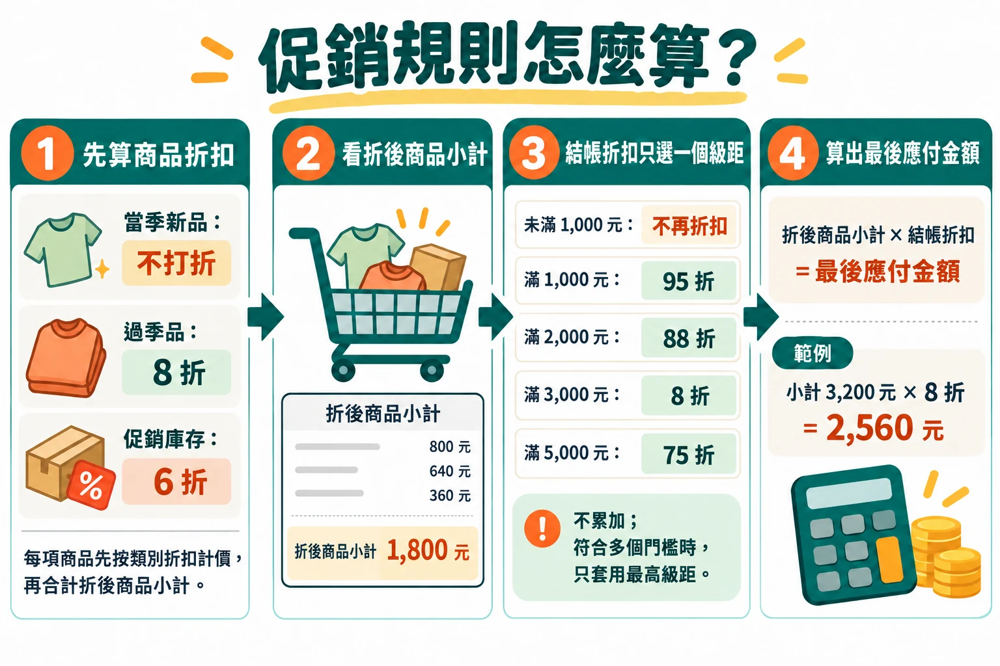
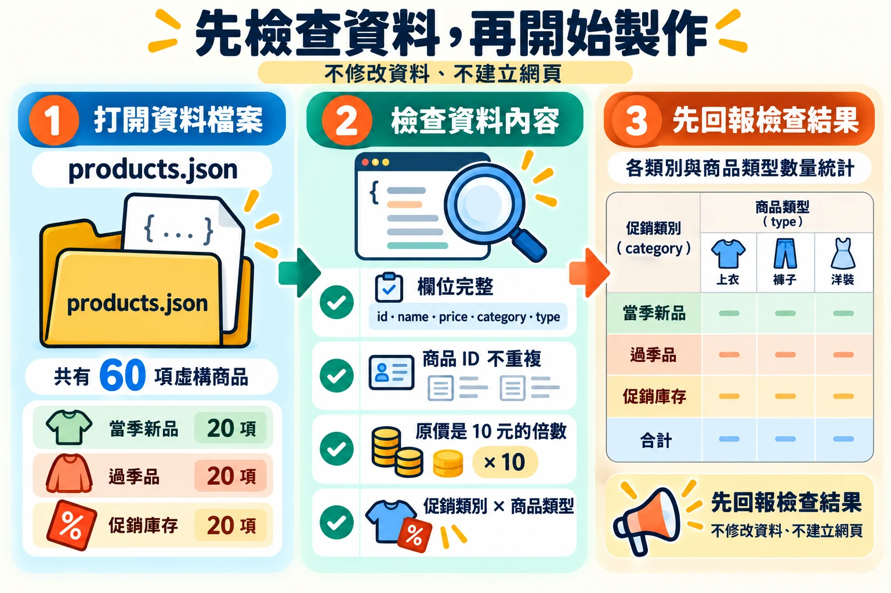
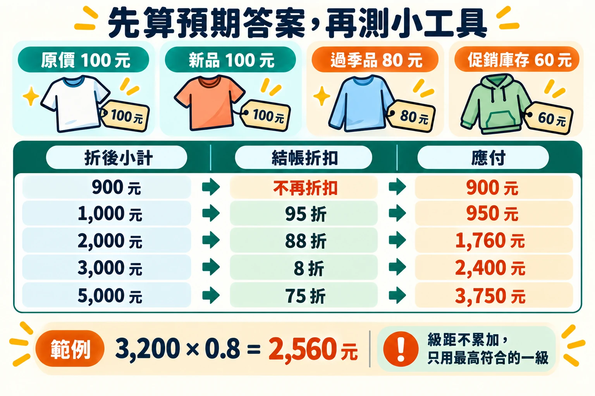
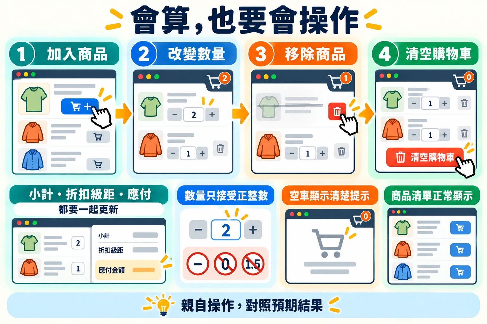
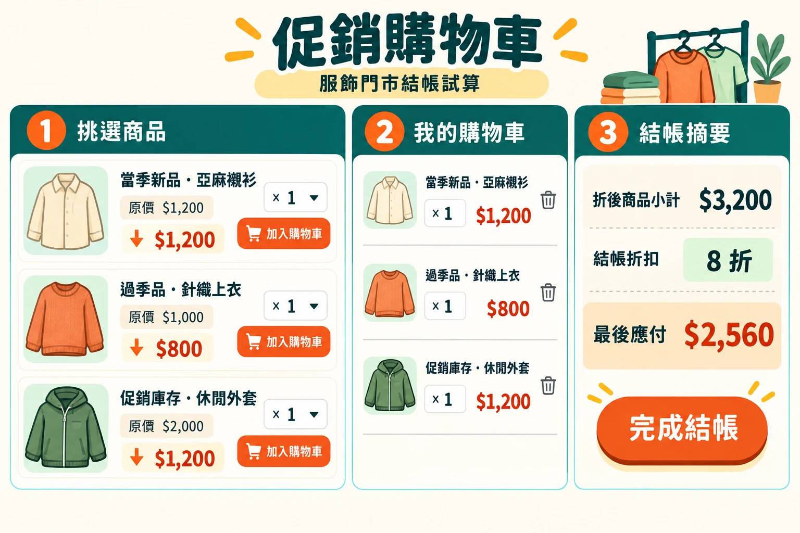
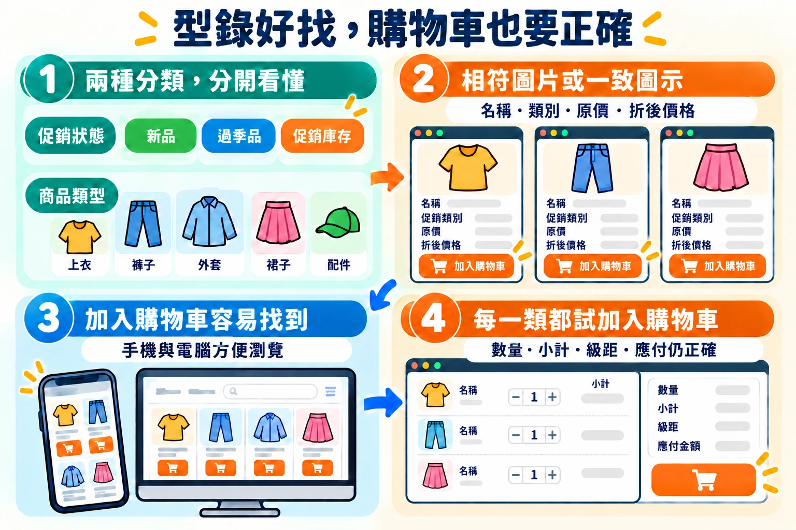
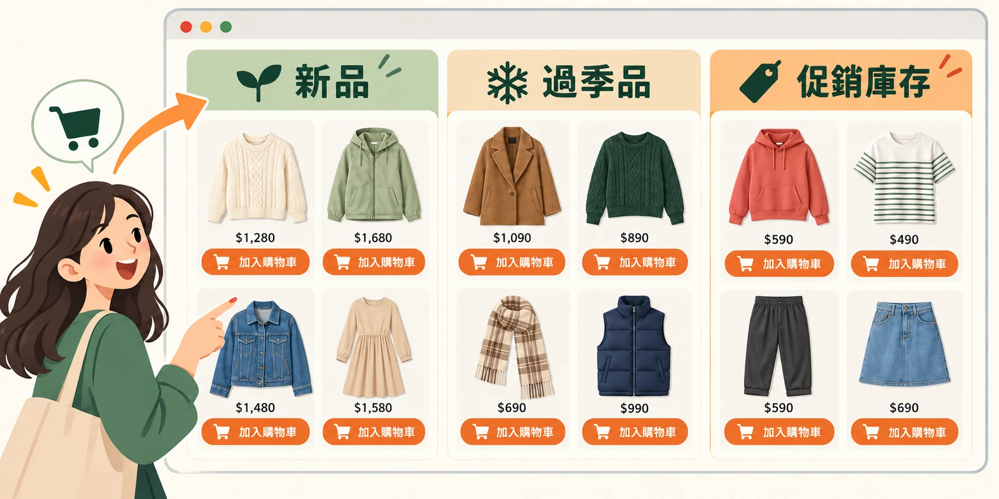

15:20–16:10 · 50 分鐘
單元三：AI Agent 與 Vibe Coding 的專案操作
先完成一個很小的專案，知道檔案放在哪裡、怎麼修改、怎麼再開啟。
先知道各檔案的用途，再把服飾門市的促銷結帳問題做成網頁 APP：讀懂題目 → 檢查商品資料 → 清楚交辦 → 驗算折扣 → 調整畫面 → 整理商品型錄。最後留下能重新開啟的成果。
01認識靜態網頁與專案裡的檔案
- 靜態網頁 APP
- 能在瀏覽器中操作的小工具。本課堂要求它在自己的電腦離線可用；「靜態」不表示只能看、不能按。
- HTML／index.html
- 安排頁面內容：標題、欄位、按鈕、圖與結果區。
- CSS／styles.css
- 安排字體、顏色、大小與版面。手機寬度是否好讀，也是這部分的工作。
- JavaScript／script.js
- 回應操作：勾選準備項目後更新數量，或按下計算後顯示結果。
- Prompt
- 你交給 AI 的任務說明：誰會用、需要什麼、怎樣才算完成。
- AI Agent
- 依需求協助建立或修改檔案的夥伴；你檢查它改了什麼，再親自試用。
- notes.md
- 用文字保存需求、提示、手算答案、發現的問題與修改紀錄。
- assets/
- 存放你提供的圖片或其他素材。保存專案時整個資料夾一起保留。
my-first-agent-project/
├── index.html
├── notes.md
└── assets/
└── 你的教學圖.png有些成果把外觀與操作都放在 index.html 裡，有些會另外產生 styles.css 和 script.js。兩種都可以；重要的是保留所有需要的檔案，並確定重新開啟後仍能使用。
快速辨認，不必閱讀程式碼
試著回答：改標題是內容需求；把字放大是外觀需求；讓勾選後顯示已完成數量是操作需求。你可以直接用這些日常用語交辦，不必指定程式怎麼寫。
02Problem Statement 題目敘述
門市情境
服飾門市同時販售當季新品、過季商品和較早期的促銷庫存。顧客選購多件商品時，每件商品先依類別折扣計價；結帳時，再依折後小計決定是否享有整車折扣。商品折扣和整車折扣兩層規則交錯，店員不容易在結帳前快速算出應付金額。請設計一個促銷購物車結帳試算器，讓使用者挑選商品、設定數量，並清楚看見逐項折扣、小計、結帳折扣和最後應付金額。本練習提供 60 項虛構服飾商品資料，包含促銷類別與商品類型。

03Suggested Prompt 建議 Prompt

請先下載 60 項商品資料（products.json），並將檔案放進 AI Agent 正在處理的專案資料夾。接著請 AI Agent 檢視這份資料，再用它製作購物車試算器；不必重新手動輸入或貼上整份清單。
先檢查 60 項商品資料
請讀取這個專案資料夾中的 products.json，檢查並整理商品清單。資料應有 60 項虛構服飾商品，每項包含 id、name、price、category 和 type；category 分成當季新品、過季品、促銷庫存，每類各 20 項；type 標示上衣、褲子、外套、裙裝等商品類型。請檢查商品 ID 是否重複、原價是否都是 10 元的倍數，並依促銷類別與商品類型整理成容易閱讀的摘要表。先回報檢查結果，不要修改 products.json，也不要建立網頁。可能的 AI 回覆｜商品資料檢查
以下只是參考，每次的字句與排列都可能不同；請用完成檢核判斷，而不是逐字比對。
已讀取 products.json。這一步只做檢查，沒有修改檔案，也沒有建立網頁。
檢查結果
（1）共 60 項商品；當季新品、過季品、促銷庫存各 20 項。
（2）每項都有 id、name、price、category、type 五個欄位，沒有缺漏。
（3）商品 ID 沒有重複。
（4）原價都是 10 元的倍數，最低 190 元，最高 2,880 元。
（5）商品類型共 8 種：上衣、褲子、外套、裙裝、洋裝、連身服、配件、鞋款。
促銷類別 × 商品類型（件數）
促銷類別｜上衣｜褲子｜外套｜裙裝｜洋裝｜連身服｜配件｜鞋款｜合計
當季新品｜7｜3｜4｜3｜1｜1｜1｜0｜20
過季品｜5｜4｜3｜1｜3｜0｜3｜1｜20
促銷庫存｜4｜3｜3｜2｜1｜1｜5｜1｜20
合計｜16｜10｜10｜6｜5｜2｜9｜2｜60
資料可以直接用來製作購物車試算器。需要時請告訴我下一步。再建立購物車試算器
我想做一個「促銷購物車結帳試算器」，讓店員把顧客選的商品加進購物車後，能馬上看出每樣商品折多少、整車還能不能再折，以及最後要付多少錢。請把畫面做成繁體中文，讓我能用瀏覽器直接開啟這個小工具。請讀取專案資料夾中的 products.json，使用裡面的 60 項商品資料，不要另造或遺漏商品。完成後請把小工具存成一個檔案，讓我開啟這個檔案就能在瀏覽器中使用。
商品折扣分三種：當季新品照原價，不打折；過季品打 8 折；較早期的促銷庫存打 6 折。商品清單和購物車裡，請讓人看得出商品類別、原價、折扣和折後單價。
我希望店員可以從商品清單挑商品、輸入數量後加入購物車，也可以改數量或移除商品。數量請限制為正整數。購物車每一項都要列出品名、類別、數量、折後單價和這一項的金額。
結帳時，請先把每項商品的類別折扣算好，再加總成「折後商品小計」。接著看小計符合哪個結帳折扣，只用符合的最高一級，不要把不同級距的折扣一層層累加：未滿 1,000 元沒有結帳折扣；滿 1,000 元打 95 折，滿 2,000 元打 88 折，滿 3,000 元打 8 折，滿 5,000 元打 75 折。像小計 3,200 元，就只打 8 折，不再另外打 95 折或 88 折。最後應付金額請四捨五入到整數元。
結帳摘要請列出原價合計、商品折扣後的小計、套用的結帳折扣級距、折抵金額和最後應付金額。只要商品或數量有變動，金額就要跟著更新；如果購物車是空的，也請顯示清楚的提示。
畫面請清楚好操作，手機和電腦都方便使用，重要金額要容易看見。這個小工具只用虛構商品資料，不連接真實商店或顧客資料。完成後，請簡單告訴我怎麼使用，以及怎麼確認折扣有算對。可能的 AI 回覆｜購物車試算器
以下只是參考，每次的字句與排列都可能不同；請用完成檢核判斷，而不是逐字比對。
已用 products.json 的 60 項商品做好「促銷購物車結帳試算器」，存成專案資料夾中的 index.html 一個檔案，不連接真實商店或顧客資料。
怎麼使用
（1）在專案資料夾雙擊 index.html，用瀏覽器開啟。
（2）在商品清單看每項商品的類別、原價、折扣和折後單價。
（3）輸入數量（只接受 1、2、3 這類正整數），按「加入購物車」。
（4）在購物車可以改數量或按「移除」；按「清空購物車」會全部清除，並顯示空車提示。
（5）結帳摘要會即時顯示原價合計、折後商品小計、結帳折扣級距、折抵金額和最後應付金額。
怎麼確認折扣有算對
請先手算，再放進購物車對照：
購物車內容｜折後商品小計｜結帳折扣｜應付
編織皮革腰帶 1 條｜680 元｜無｜680 元
條紋棉質T恤、雙色針織圍巾、柔軟居家短襪三入組各 1 件｜1,000 元｜95 折｜950 元
V領針織上衣 2 件、毛呢報童帽 3 件｜3,200 元｜8 折｜2,560 元
小計 3,200 元只套用 8 折，不會再疊加 95 折或 88 折。也請試著把數量改成 0、負數或小數，應該會被擋下。下方每段提示後的成果範例，都只是其中一種可能。你做出來的畫面、配色、商品排列和操作細節，可能和範例不太一樣；這沒有關係。但提示中要求的每一個元素與功能都必須具備，並通過第 04 節的檢核，才算完成。請對照下面的清單逐項確認，缺少的部分再請 AI Agent 補上。
可能的成果 · 初始版
開啟初始版範例（在新分頁開啟）。你的版面可以不同，但必須具備：
- 使用 products.json 的 60 項商品，沒有另造或遺漏；可直接用瀏覽器開啟，不連接真實商店系統。
- 新品不打折、過季品 8 折、促銷庫存 6 折；清單與購物車看得出商品類別、原價、折扣和折後單價。
- 可以加入商品、調整數量（只接受正整數）、移除商品；購物車每項列出品名、類別、數量、折後單價和金額。
- 結帳小計以「商品類別折扣後」的金額計算，只套用最高符合的一個級距：未滿 1,000 元無結帳折扣；滿 1,000 元 95 折、滿 2,000 元 88 折、滿 3,000 元 8 折、滿 5,000 元 75 折。
- 摘要顯示原價合計、折後商品小計、結帳折扣級距、折抵金額和最後應付金額；應付金額四捨五入到整數元。
- 商品或數量變動時金額即時更新；購物車是空的時有清楚提示。
04Check it 完成檢核

驗算折扣金額
- 上方圖卡以原價 100 元示意（新品 100、過季品 80、促銷庫存 60 元）；商品資料中沒有 100 元的商品，請改用實際商品核對：編織皮革腰帶（新品，原價 680 元）折後 680 元；雙色針織圍巾（過季品，原價 590 元）折後 472 元；柔軟居家短襪三入組（促銷庫存，原價 190 元）折後 114 元。
- 購物車只放 1 條編織皮革腰帶：小計 680 元，未滿 1,000 元，是否沒有結帳折扣、應付 680 元？
- 條紋棉質T恤、雙色針織圍巾、柔軟居家短襪三入組各 1 件：小計剛好 1,000 元，是否只套用 95 折、應付 950 元？
- 輕薄針織背心、抽繩休閒短褲、雙色針織圍巾、柔軟居家短襪三入組各 1 件：小計剛好 2,000 元，是否只套用 88 折、應付 1,760 元？
- 薄款連帽外套、雙面穿背心、雙色針織圍巾各 1 件：小計剛好 3,000 元，是否只套用 8 折、應付 2,400 元？
- V領針織上衣 2 件、毛呢報童帽 3 件：小計 3,200 元，是否只套用 8 折，最後應付 2,560 元？
- 輕薄針織背心 3 件、棉質短版針織衫 2 件：小計剛好 5,000 元，是否只套用 75 折、應付 3,750 元？

檢查操作和畫面
- 修改購買數量或移除商品後，小計、折扣級距和應付金額是否一起更新？
- 購物車清空時，是否顯示空車提示，而且不會出現錯誤金額？商品清單是否能正常顯示在小工具中？
05進一步調整畫面
提出外觀調整需求
AI Agent 第一次生成的畫面，可以先視為 80 分的起點：主要功能已經做出來，但外觀、資訊層次或操作細節可能還不完全符合門市實際需要。先完成第 04 節的檢核，確認小工具操作和金額都正確，再根據使用情境指出最需要改善的地方，例如讓商品價格更醒目、讓結帳摘要更容易找到，或讓手機畫面更好操作。請一次提出清楚、具體的調整需求，請 AI Agent 修改後再親自查看；經過幾輪「觀察、描述、修改、檢查」，一步步從 80 分進步到 85 分、90 分，甚至朝著 100 分的理想終點前進。
這些分數用來比喻逐步改善的過程，不是固定的評分標準。AI Agent 可以協助修改畫面，但「什麼才算更好用」要由熟悉使用情境的人判斷。每次調整後都要確認原有商品、操作方式、折扣規則和計算結果仍然正確，再決定是否繼續修整。

這個促銷購物車小工具的操作和金額我已經確認正確，請保留目前所有商品、操作方式、折扣規則和計算結果，不要改動或拿掉。這次只想調整畫面，讓它更像服飾門市使用的促銷工具；可以參考上方示意圖的配色和資訊安排。
請用溫暖明亮的米白色作為底色，深綠色呈現標題，暖橘色標出折扣、價格和主要按鈕。商品資訊請分成容易辨認的小卡片，商品名稱、類別、原價和折後價格要清楚好讀；購物車裡的最後應付金額請特別醒目。
手機和電腦上都要看得清楚、方便操作。完成後請簡單說明畫面有哪些地方調整了，並提醒我再檢查商品選取、購物車操作和折扣金額是否仍然正確。可能的 AI 回覆｜畫面調整
以下只是參考，每次的字句與排列都可能不同；請用完成檢核判斷，而不是逐字比對。
已調整畫面；商品、操作方式、折扣規則和計算方式都沒有改動。
調整了哪些地方
（1）底色改成米白色，標題改成深綠色。
（2）折扣、價格和「加入購物車」等主要按鈕改用暖橘色。
（3）商品改成小卡片，每張列出商品名稱、類別、原價和折後價格。
（4）購物車的最後應付金額放大並加上底色，一眼就能看到。
（5）手機寬度時，商品、購物車和結帳摘要改成由上往下排列。
請再檢查
（1）挑幾項商品加入購物車，改數量、移除，確認金額跟著更新。
（2）放入 V領針織上衣 2 件、毛呢報童帽 3 件，應付仍應是 2,560 元。
（3）把瀏覽器視窗縮窄，確認手機寬度下也好讀、好按。可能的成果 · 畫面調整版
開啟畫面調整版範例（在新分頁開啟）。配色深淺、卡片樣式可以和範例不同，但必須具備：
- 米白色底色、深綠色標題，折扣、價格與主要按鈕以暖橘色標出。
- 商品資訊分成小卡片，商品名稱、類別、原價和折後價格清楚好讀。
- 購物車裡的最後應付金額特別醒目；手機和電腦上都看得清楚、方便操作。
- 原有商品、操作方式、折扣規則和計算結果都沒有改變，初始版的清單仍全部通過。
06整理商品型錄，讓挑選更直覺

把商品選擇區改成視覺化型錄
完成第 05 節的畫面調整後，再從顧客或門市人員挑選商品的角度，改善商品選擇區。型錄可以同時依「促銷狀態」和「商品類型」整理：促銷狀態包括新品、過季品、促銷庫存；商品類型則可包括上衣、褲子、外套、裙裝和配件等。請 AI Agent 讓使用者能清楚辨認這兩種分類，並為不同商品類型加入相符的商品圖片或清楚易懂的視覺圖示，讓使用者能先看圖辨認商品，再閱讀名稱、價格和折扣資訊。若目前沒有可用的商品照片，請使用一致、清楚的示意圖，並避免使用失效的圖片連結。
型錄不只要好看，也要讓人容易找到商品並加入購物車。請觀察類別是否清楚、商品卡片資訊是否易讀、加入購物車的按鈕是否明顯，以及在手機上是否方便瀏覽。完成後逐項操作並核對購物車與折扣金額，確保這次 UX（使用者體驗）改善沒有影響既有功能。

請改善這個促銷購物車小工具的商品選擇區，將商品整理成容易瀏覽的型錄。請同時呈現促銷狀態分類「新品」、「過季品」、「促銷庫存」，以及商品類型分類，例如「上衣」、「褲子」、「外套」、「裙裝」和「配件」，讓使用者容易找到想買的品項。請保留目前所有商品資料、折扣規則、購物車操作與計算結果，不要刪除或改動。
請為每一類商品加入相符的圖片或清楚易懂的視覺圖示，並以商品卡片呈現商品名稱、類別、原價與折後價格。若專案中沒有合適的商品照片，請使用風格一致的示意圖或圖示，不要放入不相關或可能失效的外部圖片連結。
請讓使用者容易分辨商品類別、找到商品並加入購物車；在手機和電腦上都要方便瀏覽與操作。完成後請告訴我你改善了哪些地方，並檢查各類商品都能正確加入購物車，原有的數量、小計、折扣級距和應付金額仍然正確。可能的 AI 回覆｜商品型錄
以下只是參考，每次的字句與排列都可能不同；請用完成檢核判斷，而不是逐字比對。
已把商品選擇區整理成型錄；原有商品資料、折扣規則、購物車操作和計算方式都保留。
改善了哪些地方
（1）上方有兩排分類按鈕：促銷狀態（全部、當季新品、過季品、促銷庫存）與商品類型（全部、上衣、褲子、外套、裙裝、洋裝、連身服、配件、鞋款），兩排可以一起篩選。
（2）商品依促銷狀態分區顯示，每區標出件數。
（3）每種商品類型都有風格一致的示意圖示。專案中沒有商品照片，所以沒有放外部圖片連結。
（4）商品卡片列出名稱、類別、原價與折後價格，下方就是「加入購物車」按鈕。
（5）手機寬度時，卡片改成較少欄，分類按鈕會自動換行，不必左右滑動。
我做的檢查
從三種促銷狀態各挑一項加入購物車：
商品｜類別｜折後單價
編織皮革腰帶｜當季新品｜680 元
雙色針織圍巾｜過季品｜472 元
柔軟居家短襪三入組｜促銷庫存｜114 元
小計 1,266 元，套用 95 折，應付 1,203 元，與改版前相同。請你也從每一類各挑一項試試看。可能的成果 · 商品型錄版
開啟商品型錄版範例（在新分頁開啟）。分類按鈕、圖示風格和卡片排列可以和範例不同，但必須具備：
- 同時呈現促銷狀態（新品、過季品、促銷庫存）與商品類型（例如上衣、褲子、外套、裙裝、配件）兩種分類。
- 每一類商品都有相符的圖片或風格一致的示意圖示，沒有不相關或失效的外部圖片連結。
- 商品卡片呈現名稱、類別、原價與折後價格，加入購物車的操作容易找到；手機和電腦都方便瀏覽。
- 各類商品都能正確加入購物車，原有的數量、小計、折扣級距和應付金額仍然正確。
檢查型錄和挑選流程
- 新品、過季品和促銷庫存是否容易辨認？上衣、褲子、外套等商品類型是否也能快速找到？
- 商品名稱、價格、折扣和加入購物車的操作是否容易找到？手機上是否也方便使用？
- 從每一類挑選商品後，購物車內容、折扣級距和應付金額是否仍正確？